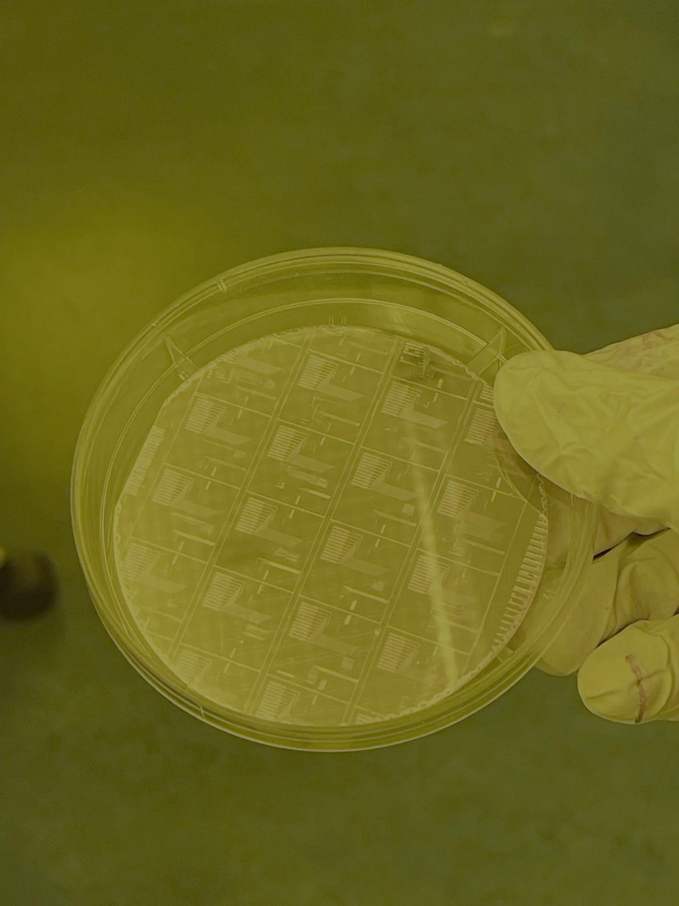
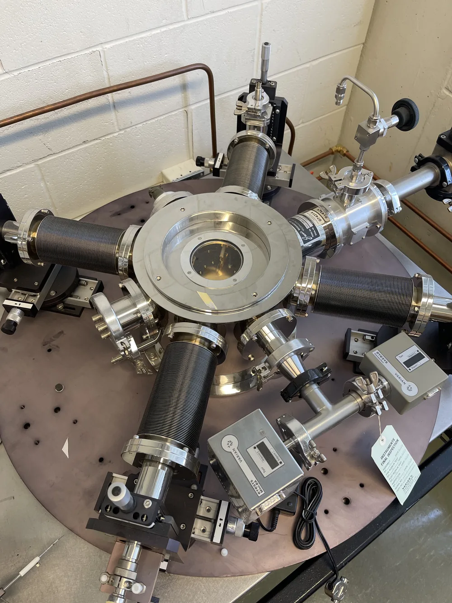
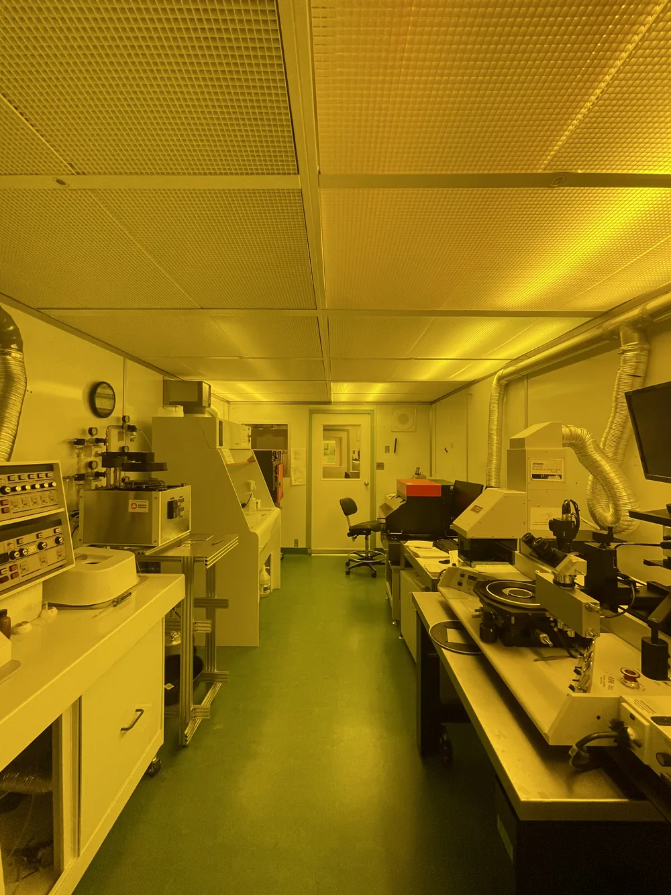
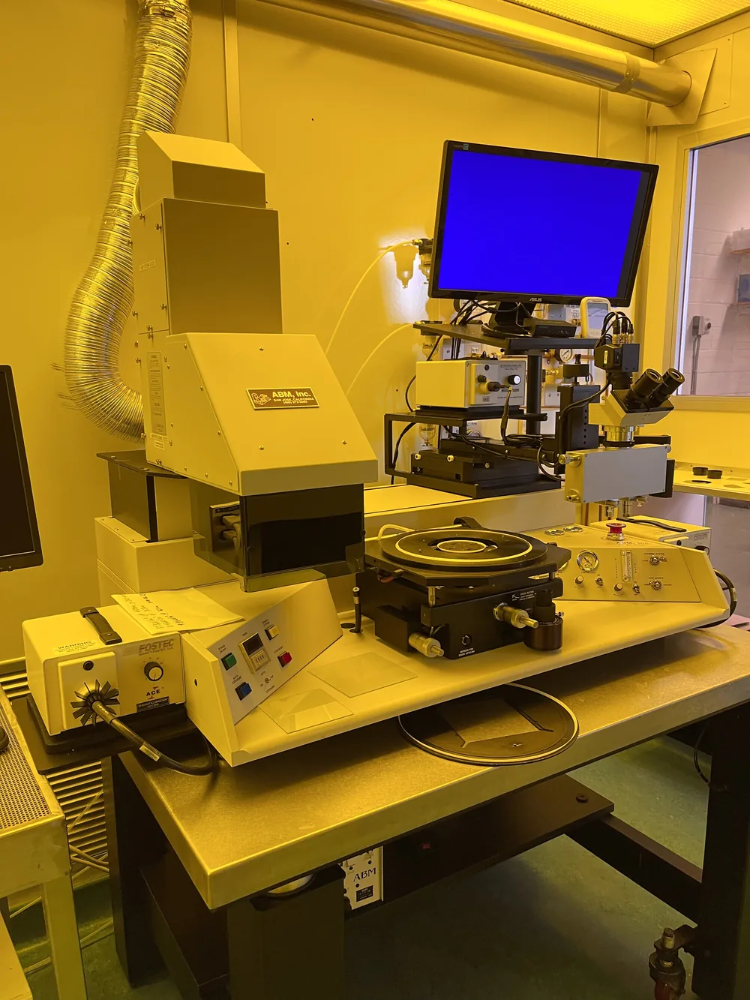
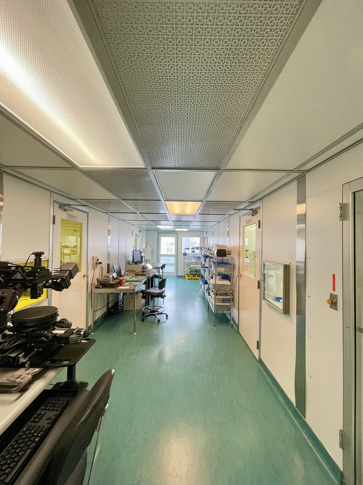
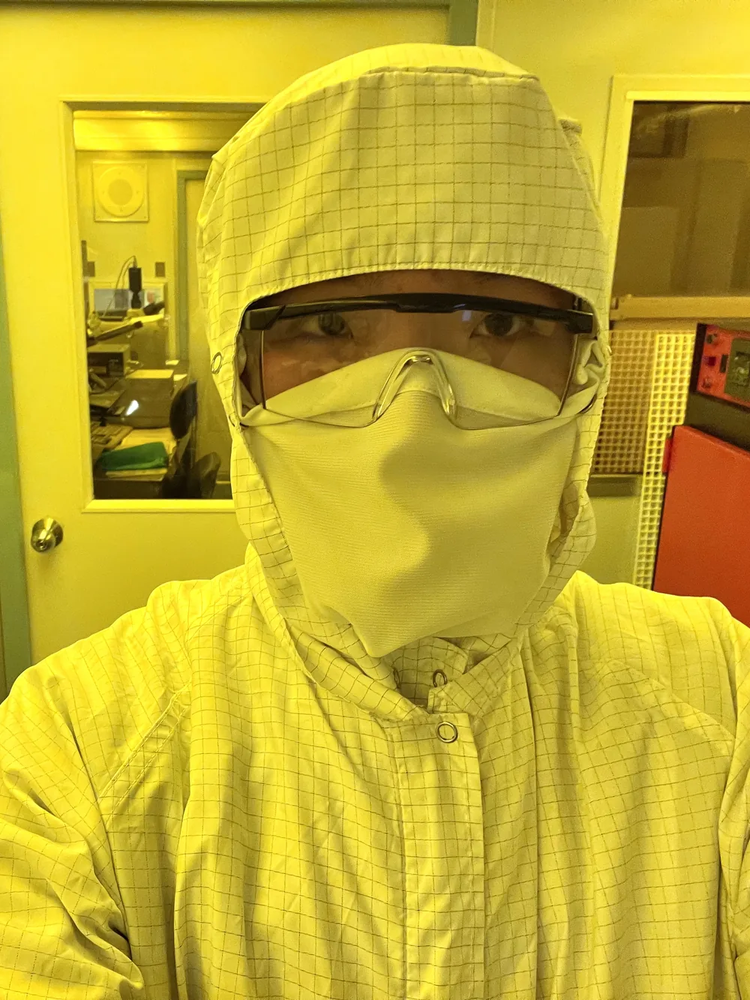

Research · Two threads, two institutions
Sensor fabrication, and silicon reliability.
Two separate research threads: flexible and MEMS sensor fabrication in a Class 10 cleanroom at the University of Manitoba, and 12-nm RISC-V delay-fault research with the CMOS Design and Reliability Group at the University of Waterloo.
Flexible & MEMS sensor fabrication
01 / NANO-SYSTEMS LAB · MANITOBAAt the Nano-Systems Fabrication Laboratory at the University of Manitoba, I work on flexible and MEMS sensor devices, directly running the process steps that turn a bare substrate into a functioning device. That means running lithography and etch steps myself, tracking process parameters across a full fabrication sequence, and characterizing the resulting devices rather than only reading about the process.
The work is hands-on cleanroom fabrication rather than simulation: photolithography, ion implantation, dry etching, deposition, and wafer processing, followed by characterization with SEM, profilometry, and ellipsometry.
| Facility | Nano-Systems Fabrication Laboratory, University of Manitoba |
|---|---|
| Cleanroom class | Class 10 |
| Devices | Flexible sensors, MEMS |
| Characterization | SEM, profilometry, ellipsometry |
Process steps
01A / CLEANROOM-
Photolithography
Patterning photoresist to define device geometry on the wafer surface.
-
Ion implantation
Introducing dopants to set device electrical properties at specific depths and concentrations.
-
Dry etching (RIE / ICP)
Removing material selectively to transfer patterned geometry into functional structures.
-
Deposition (PVD / CVD)
Building up thin films — conductors, dielectrics, and structural layers — across the wafer.
-
Wafer processing & characterization
Tracking the full process sequence and verifying device outcomes with SEM, profilometry, and ellipsometry.
In the cleanroom
01B / LAB FLOORThe yellow cast is the point: photoresist is sensitive to short wavelengths, so the lithography bays run under filtered light that carries none of them. Everything here is the Class 10 facility at Manitoba where the process steps above actually happen.
The wafer alongside is the output end of that sequence — a substrate stepped through lithography, etch and deposition until each die carries a finished set of interdigitated electrode arrays and test structures, ready for characterization.






Delay-fault detection on a 12-nm RISC-V core
02 / CMOS DESIGN & RELIABILITY · WATERLOOThis is a separate thread from the fabrication work above, carried out with the CMOS Design and Reliability Group at the University of Waterloo under Prof. Manoj Sachdev. It is a research paper on a variable D-Q delay flip-flop for transition-fault testing, implemented on an RV32IM RISC-V core in a 12 nm FinFET process.
The flip-flop's data-to-output delay is made deliberately adjustable. Running the same test vectors first at nominal delay and then with the additional delay enabled shrinks the effective timing margin on a path, so a transition fault shows up as a difference between the two captured responses — catching delay faults that standard scan-based DFT can miss, and reusing the existing transmitting flip-flop instead of adding shadow registers and comparison logic.
| Group | CMOS Design and Reliability Group, University of Waterloo |
|---|---|
| Supervisor | Prof. Manoj Sachdev |
| Process node | 12 nm FinFET |
| Target | RV32IM RISC-V core |
| Technique | Variable D-Q delay flip-flop, transition-fault testing |
Both runs use the same test vectors and the same capture flip-flop; only DLY_SEL changes between them. A path with margin to spare produces the same captured response twice, so the difference between the two runs isolates the paths that have lost their slack — and the existing scan chain already carries both responses off-chip.
The established alternatives detect the error in space: they hold a second copy of the captured value and compare the two within the cycle. Razor pairs each flip-flop with a shadow latch on a delayed clock and an XOR comparator. The pre-sampling aging sensor adds a guardband delay element, a second flip-flop, and an XOR. Both put a storage element and a comparator at every instrumented capture site. Comparing in time instead moves the only added cell to the launch side and leaves the capture end alone — which is where the area and power difference comes from.
Razor — Ernst et al., “Razor: Circuit-Level Correction of Timing Errors for Low-Power Operation,” IEEE Micro, Nov–Dec 2004. Pre-sampling aging sensor — Agarwal et al., “Optimized Circuit Failure Prediction for Aging: Practicality and Promise.”
The variable delay element above is itself built from chained standard cells — inverters and gates whose transistor-level layout sets the actual delay-per-stage. The sketches below are generic illustrations of that cell structure, not views of any specific library: how N-well and diffusion, poly gates, and metal-1 with contacts stack up in an inverter, a 2-input NAND, and a 2-input NOR, color-coded by layer the way a layout tool renders them.
Results
02A / EVALUATIONThe variable D-Q delay flip-flop was implemented in an open-source 32-bit RV32IM RISC-V core, synthesized standalone in a 12 nm FinFET process at a 1 GHz target frequency, followed by scan insertion, ATPG, and static timing analysis.
Rather than instrumenting every path, the delay flip-flop was applied progressively to the most timing-critical fraction of paths by slack, at several coverage levels up to full coverage, and compared against established delay-fault detection flip-flop architectures under identical synthesis, timing, and operating conditions. Power was evaluated in Cadence Joules against a functional program exercising the processor; area came from Genus's mapped standard-cell reporting.
Every instrumented configuration closed timing at the 1 GHz target with zero total negative slack. Because the technique reuses the existing transmitting flip-flop rather than adding a shadow register and comparison logic, it carries lower area and power overhead than the alternatives evaluated, and the margin widens as coverage increases.
Quantified overhead figures are held back until the paper is published. See Disclosure.
| Core | Open-source RV32IM RISC-V |
|---|---|
| Process / clock | 12 nm FinFET, 1 GHz target |
| Coverage tested | Most timing-critical paths, several levels up to 100% |
| Timing closure | 1 GHz, 0 TNS, all configurations |
| Status | Results pending publication |
Disclosure
03 / SCOPEOpen to walk through
- The mechanism in full: why running the same vectors at nominal and extended delay turns a transition fault into a difference between two captured responses.
- Why reusing the transmitting flip-flop avoids the shadow register and comparison logic that the alternatives need, and where that saving comes from.
- The coverage-selection method — instrumenting paths by slack rather than uniformly, and why that ordering matters.
- The evaluation setup: synthesis and timing conditions held identical across architectures, the 1 GHz target, the functional program used for power, and how area was extracted.
- On the fabrication side, every process step run at the Nano-Systems Fabrication Laboratory and the characterization behind it.
Not published here
- Quantified area, power and overhead figures, and the head-to-head numbers against the comparison architectures — held until the paper is published.
- Absolute area and power in the target process, which characterize the library rather than the design.
- The foundry and PDK revision, library and cell names, and the transistor-level schematic and layout of the flip-flop itself.
- RTL, netlists, constraint files and tool scripts.
The Waterloo thread is carried out with the CMOS Design and Reliability Group under licensed academic access to a 12 nm FinFET PDK, and its results are under embargo until publication. The method, the reasoning and the negative results are all open to discussion — ask, and I will walk through any of it.